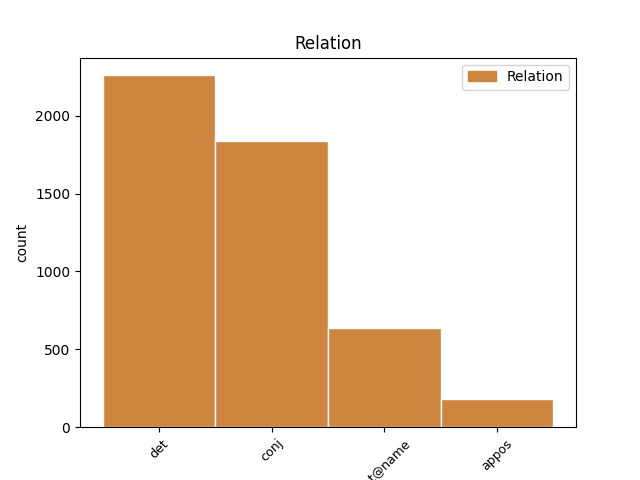
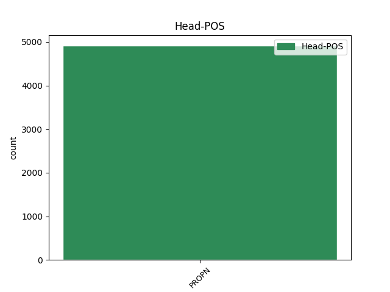
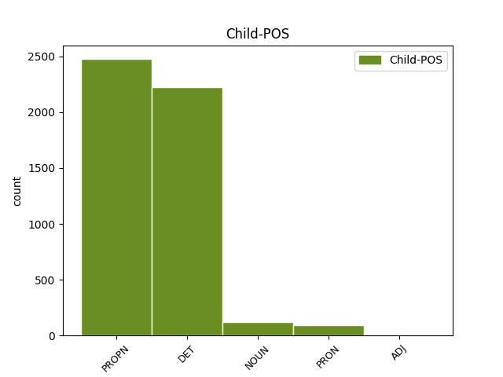

Distribution of features within this leaf



Agreement Rules sorted by frequency.
- When the dependent token is the determiner(det) of the head token, and the head token is PROPN and the dependent token is DET.
1 Besonders _ _ _ _ 0 _ _ _
2 der der DET ART Case=Nom|Gender=Masc|Number=Sing|PronType=Art 3 det _ _
3 Cube Cube PROPN NE Case=Nom|Number=Sing|Person=3 0 _ _ _
4 profitiert _ _ _ _ 0 _ _ _
5 von _ _ _ _ 0 _ _ _
6 der _ _ _ _ 0 _ _ _
7 neuen _ _ _ _ 0 _ _ _
8 Build-To-Order-Option _ _ _ _ 0 _ _ _
9 , _ _ _ _ 0 _ _ _
10 da _ _ _ _ 0 _ _ _
11 sich _ _ _ _ 0 _ _ _
12 die _ _ _ _ 0 _ _ _
13 dort _ _ _ _ 0 _ _ _
14 verbaute _ _ _ _ 0 _ _ _
15 Grafikkarte _ _ _ _ 0 _ _ _
16 nicht _ _ _ _ 0 _ _ _
17 wie _ _ _ _ 0 _ _ _
18 in _ _ _ _ 0 _ _ _
19 den _ _ _ _ 0 _ _ _
20 Power _ _ _ _ 0 _ _ _
21 Macs _ _ _ _ 0 _ _ _
22 vom _ _ _ _ 0 _ _ _
23 Anwender _ _ _ _ 0 _ _ _
24 durch _ _ _ _ 0 _ _ _
25 ein _ _ _ _ 0 _ _ _
26 anderes _ _ _ _ 0 _ _ _
27 Modell _ _ _ _ 0 _ _ _
28 ersetzen _ _ _ _ 0 _ _ _
29 lässt _ _ _ _ 0 _ _ _
30 . _ _ _ _ 0 _ _ _
1 Mit _ _ _ _ 0 _ _ _
2 18.000 _ _ _ _ 0 _ _ _
3 verkauften _ _ _ _ 0 _ _ _
4 Servern _ _ _ _ 0 _ _ _
5 , _ _ _ _ 0 _ _ _
6 die _ _ _ _ 0 _ _ _
7 unter _ _ _ _ 0 _ _ _
8 Linux _ _ _ _ 0 _ _ _
9 laufen _ _ _ _ 0 _ _ _
10 , _ _ _ _ 0 _ _ _
11 liegt _ _ _ _ 0 _ _ _
12 der _ _ _ _ 0 _ _ _
13 Computerhersteller _ _ _ _ 0 _ _ _
14 im _ _ _ _ 0 _ _ _
15 vierten _ _ _ _ 0 _ _ _
16 Quartal _ _ _ _ 0 _ _ _
17 1999 _ _ _ _ 0 _ _ _
18 deutlich _ _ _ _ 0 _ _ _
19 vor _ _ _ _ 0 _ _ _
20 IBM _ _ _ _ 0 _ _ _
21 ( _ _ _ _ 0 _ _ _
22 7.000 _ _ _ _ 0 _ _ _
23 Server _ _ _ _ 0 _ _ _
24 ) _ _ _ _ 0 _ _ _
25 , _ _ _ _ 0 _ _ _
26 Hewlett-Packard Hewlett-Packard PROPN NE Case=Dat|Number=Sing|Person=3 0 _ _ _
27 ( _ _ _ _ 0 _ _ _
28 5.400 _ _ _ _ 0 _ _ _
29 Server _ _ _ _ 0 _ _ _
30 ) _ _ _ _ 0 _ _ _
31 und _ _ _ _ 0 _ _ _
32 Dell Dell PROPN NE Case=Dat|Number=Sing|Person=3 26 conj _ _
33 ( _ _ _ _ 0 _ _ _
34 5.200 _ _ _ _ 0 _ _ _
35 Server _ _ _ _ 0 _ _ _
36 ) _ _ _ _ 0 _ _ _
37 . _ _ _ _ 0 _ _ _
1 Fujitsu Fujitsu PROPN NE Case=Nom|Number=Sing|Person=3 0 _ _ _
2 Siemens Siemens PROPN NE Case=Nom|Number=Sing|Person=3 1 flat@name _ _
3 - _ _ _ _ 0 _ _ _
4 nach _ _ _ _ 0 _ _ _
5 Compaq _ _ _ _ 0 _ _ _
6 die _ _ _ _ 0 _ _ _
7 Nummer _ _ _ _ 0 _ _ _
8 Zwei _ _ _ _ 0 _ _ _
9 - _ _ _ _ 0 _ _ _
10 verlor _ _ _ _ 0 _ _ _
11 1,2 _ _ _ _ 0 _ _ _
12 , _ _ _ _ 0 _ _ _
13 IBM _ _ _ _ 0 _ _ _
14 sogar _ _ _ _ 0 _ _ _
15 2,2 _ _ _ _ 0 _ _ _
16 Prozentpunkte _ _ _ _ 0 _ _ _
17 . _ _ _ _ 0 _ _ _
1 IBM _ _ _ _ 0 _ _ _
2 , _ _ _ _ 0 _ _ _
3 Hewlett-Packard Hewlett-Packard PROPN NE Case=Nom|Number=Sing|Person=3 0 _ _ _
4 , _ _ _ _ 0 _ _ _
5 Siemens Siemens PROPN NE Case=Nom|Number=Sing|Person=3 3 appos _ _
6 , _ _ _ _ 0 _ _ _
7 Intel _ _ _ _ 0 _ _ _
8 und _ _ _ _ 0 _ _ _
9 die _ _ _ _ 0 _ _ _
10 Telekom _ _ _ _ 0 _ _ _
11 stellten _ _ _ _ 0 _ _ _
12 Computer _ _ _ _ 0 _ _ _
13 für _ _ _ _ 0 _ _ _
14 Schüler _ _ _ _ 0 _ _ _
15 zum _ _ _ _ 0 _ _ _
16 Preis _ _ _ _ 0 _ _ _
17 von _ _ _ _ 0 _ _ _
18 unter _ _ _ _ 0 _ _ _
19 1000 _ _ _ _ 0 _ _ _
20 Mark _ _ _ _ 0 _ _ _
21 in _ _ _ _ 0 _ _ _
22 Aussicht _ _ _ _ 0 _ _ _
23 . _ _ _ _ 0 _ _ _
1 Ein _ _ _ _ 0 _ _ _
2 Microsoft-Passport _ _ _ _ 0 _ _ _
3 soll _ _ _ _ 0 _ _ _
4 dazu _ _ _ _ 0 _ _ _
5 dienen _ _ _ _ 0 _ _ _
6 , _ _ _ _ 0 _ _ _
7 sich _ _ _ _ 0 _ _ _
8 gegenüber _ _ _ _ 0 _ _ _
9 Microsoft Microsoft PROPN NE Case=Dat|Number=Sing|Person=3 0 _ _ _
10 selbst _ _ _ _ 0 _ _ _
11 sowie _ _ _ _ 0 _ _ _
12 Website-Betreibern Betreiber NOUN NN Case=Dat|Gender=Masc|Number=Plur|Person=3 9 conj _ _
13 , _ _ _ _ 0 _ _ _
14 die _ _ _ _ 0 _ _ _
15 Passport _ _ _ _ 0 _ _ _
16 lizenziert _ _ _ _ 0 _ _ _
17 haben _ _ _ _ 0 _ _ _
18 , _ _ _ _ 0 _ _ _
19 auszuweisen _ _ _ _ 0 _ _ _
20 und _ _ _ _ 0 _ _ _
21 beinhaltet _ _ _ _ 0 _ _ _
22 sogar _ _ _ _ 0 _ _ _
23 Passwörter _ _ _ _ 0 _ _ _
24 und _ _ _ _ 0 _ _ _
25 Kreditkarten-Daten _ _ _ _ 0 _ _ _
26 für _ _ _ _ 0 _ _ _
27 die _ _ _ _ 0 _ _ _
28 Bezahlung _ _ _ _ 0 _ _ _
29 im _ _ _ _ 0 _ _ _
30 Netz _ _ _ _ 0 _ _ _
31 . _ _ _ _ 0 _ _ _
1 Zwar _ _ _ _ 0 _ _ _
2 passten _ _ _ _ 0 _ _ _
3 Musik _ _ _ _ 0 _ _ _
4 und _ _ _ _ 0 _ _ _
5 Internet _ _ _ _ 0 _ _ _
6 " _ _ _ _ 0 _ _ _
7 ideal _ _ _ _ 0 _ _ _
8 zusammen _ _ _ _ 0 _ _ _
9 " _ _ _ _ 0 _ _ _
10 , _ _ _ _ 0 _ _ _
11 wie _ _ _ _ 0 _ _ _
12 Thomas Thomas PROPN NE Case=Nom|Number=Sing|Person=3 0 _ _ _
13 M. _ _ _ _ 0 _ _ _
14 Stein _ _ _ _ 0 _ _ _
15 , _ _ _ _ 0 _ _ _
16 Vorsitzender Vorsitzend NOUN NN Case=Nom|Degree=Pos|Gender=Masc|Number=Sing|Person=3 12 appos _ _
17 des _ _ _ _ 0 _ _ _
18 Bundesverbandes _ _ _ _ 0 _ _ _
19 der _ _ _ _ 0 _ _ _
20 Phonographischen _ _ _ _ 0 _ _ _
21 Wirtschaft _ _ _ _ 0 _ _ _
22 ( _ _ _ _ 0 _ _ _
23 IFPI _ _ _ _ 0 _ _ _
24 ) _ _ _ _ 0 _ _ _
25 , _ _ _ _ 0 _ _ _
26 am _ _ _ _ 0 _ _ _
27 Donnerstag _ _ _ _ 0 _ _ _
28 in _ _ _ _ 0 _ _ _
29 Hamburg _ _ _ _ 0 _ _ _
30 zugab _ _ _ _ 0 _ _ _
31 . _ _ _ _ 0 _ _ _
1 3Com 3Com PROPN NE Case=Nom|Number=Sing|Person=3 0 _ _ _
2 , _ _ _ _ 0 _ _ _
3 einer ein PRON PIS Case=Nom|Gender=Masc|Number=Sing|Person=3|PronType=Ind,Neg,Tot 1 appos _ _
4 der _ _ _ _ 0 _ _ _
5 größten _ _ _ _ 0 _ _ _
6 US-amerikanischen _ _ _ _ 0 _ _ _
7 Hersteller _ _ _ _ 0 _ _ _
8 von _ _ _ _ 0 _ _ _
9 Netzwerk-Equipment _ _ _ _ 0 _ _ _
10 , _ _ _ _ 0 _ _ _
11 hat _ _ _ _ 0 _ _ _
12 in _ _ _ _ 0 _ _ _
13 seinem _ _ _ _ 0 _ _ _
14 vierten _ _ _ _ 0 _ _ _
15 Quartal _ _ _ _ 0 _ _ _
16 , _ _ _ _ 0 _ _ _
17 das _ _ _ _ 0 _ _ _
18 am _ _ _ _ 0 _ _ _
19 2. _ _ _ _ 0 _ _ _
20 Juni _ _ _ _ 0 _ _ _
21 endete _ _ _ _ 0 _ _ _
22 , _ _ _ _ 0 _ _ _
23 einen _ _ _ _ 0 _ _ _
24 Umsatzrückgang _ _ _ _ 0 _ _ _
25 um _ _ _ _ 0 _ _ _
26 rund _ _ _ _ 0 _ _ _
27 38 _ _ _ _ 0 _ _ _
28 Prozent _ _ _ _ 0 _ _ _
29 auf _ _ _ _ 0 _ _ _
30 763,7 _ _ _ _ 0 _ _ _
31 Millionen _ _ _ _ 0 _ _ _
32 US-Dollar _ _ _ _ 0 _ _ _
33 verzeichnet _ _ _ _ 0 _ _ _
34 . _ _ _ _ 0 _ _ _
1 Sun _ _ _ _ 0 _ _ _
2 Microsystems _ _ _ _ 0 _ _ _
3 hat _ _ _ _ 0 _ _ _
4 auf _ _ _ _ 0 _ _ _
5 der _ _ _ _ 0 _ _ _
6 Konferenz _ _ _ _ 0 _ _ _
7 der _ _ _ _ 0 _ _ _
8 National _ _ _ _ 0 _ _ _
9 Association _ _ _ _ 0 _ _ _
10 of _ _ _ _ 0 _ _ _
11 Broadcasters _ _ _ _ 0 _ _ _
12 seinen sein PRON PPOSAT Case=Acc|Gender=Masc|Number=Sing|Person=3|Poss=Yes|PronType=Prs 13 det _ _
13 Sun Sun PROPN NE Case=Acc|Number=Sing|Person=3 0 _ _ _
14 StorEdge _ _ _ _ 0 _ _ _
15 Media _ _ _ _ 0 _ _ _
16 Central _ _ _ _ 0 _ _ _
17 Streaming _ _ _ _ 0 _ _ _
18 Server _ _ _ _ 0 _ _ _
19 angekündigt _ _ _ _ 0 _ _ _
20 . _ _ _ _ 0 _ _ _
1 Schon _ _ _ _ 0 _ _ _
2 zu _ _ _ _ 0 _ _ _
3 Sockel-7-Zeiten _ _ _ _ 0 _ _ _
4 kam _ _ _ _ 0 _ _ _
5 deshalb _ _ _ _ 0 _ _ _
6 so _ _ _ _ 0 _ _ _
7 ein _ _ _ _ 0 _ _ _
8 " _ _ _ _ 0 _ _ _
9 P-Rating _ _ _ _ 0 _ _ _
10 " _ _ _ _ 0 _ _ _
11 für _ _ _ _ 0 _ _ _
12 Prozessoren _ _ _ _ 0 _ _ _
13 wie _ _ _ _ 0 _ _ _
14 den _ _ _ _ 0 _ _ _
15 AMD _ _ _ _ 0 _ _ _
16 K5 _ _ _ _ 0 _ _ _
17 , _ _ _ _ 0 _ _ _
18 Cyrix Cyrix PROPN NE Case=Nom|Number=Sing|Person=3 0 _ _ _
19 M2 _ _ _ _ 0 _ _ _
20 und _ _ _ _ 0 _ _ _
21 andere ander PRON PIS Case=Nom|Gender=Neut|Number=Sing|Person=3|PronType=Ind,Neg,Tot 18 conj _ _
22 in _ _ _ _ 0 _ _ _
23 Mode _ _ _ _ 0 _ _ _
24 . _ _ _ _ 0 _ _ _
1 Fujitsu-Siemens _ _ _ _ 0 _ _ _
2 führt _ _ _ _ 0 _ _ _
3 , _ _ _ _ 0 _ _ _
4 Aldi Aldi PROPN NE Case=Nom|Number=Sing|Person=3 0 _ _ _
5 Zweiter zweit ADJ ADJA Case=Nom|Degree=Pos|Gender=Masc|Number=Sing 4 appos _ _
Disagree Examples:
1 Hier _ _ _ _ 0 _ _ _
2 spricht _ _ _ _ 0 _ _ _
3 sich _ _ _ _ 0 _ _ _
4 die _ _ _ _ 0 _ _ _
5 Bundesregierung _ _ _ _ 0 _ _ _
6 für _ _ _ _ 0 _ _ _
7 eine _ _ _ _ 0 _ _ _
8 Vergütungspflicht _ _ _ _ 0 _ _ _
9 aus _ _ _ _ 0 _ _ _
10 , _ _ _ _ 0 _ _ _
11 und _ _ _ _ 0 _ _ _
12 unterstützt _ _ _ _ 0 _ _ _
13 damit _ _ _ _ 0 _ _ _
14 implizit _ _ _ _ 0 _ _ _
15 die _ _ _ _ 0 _ _ _
16 Anstrengungen _ _ _ _ 0 _ _ _
17 der _ _ _ _ 0 _ _ _
18 Gema _ _ _ _ 0 _ _ _
19 im _ _ _ _ 0 _ _ _
20 laufenden _ _ _ _ 0 _ _ _
21 Muster-Verfahren _ _ _ _ 0 _ _ _
22 gegen _ _ _ _ 0 _ _ _
23 Hewlett-Packard Hewlett-Packard PROPN NE Case=Acc|Number=Sing|Person=3 0 _ _ _
24 ( _ _ _ _ 0 _ _ _
25 HP HP PROPN NE Case=Nom|Number=Sing|Person=3 23 appos _ _
26 ) _ _ _ _ 0 _ _ _
27 . _ _ _ _ 0 _ _ _
1 Letzte _ _ _ _ 0 _ _ _
2 Woche _ _ _ _ 0 _ _ _
3 hatte _ _ _ _ 0 _ _ _
4 AOL _ _ _ _ 0 _ _ _
5 bereits _ _ _ _ 0 _ _ _
6 offiziell _ _ _ _ 0 _ _ _
7 eine _ _ _ _ 0 _ _ _
8 Beta _ _ _ _ 0 _ _ _
9 des des DET ART Case=Gen|Gender=Masc|Number=Sing|PronType=Art 10 det _ _
10 AOL AOL PROPN NE Case=Nom|Number=Sing|Person=3 0 _ _ _
11 Instant _ _ _ _ 0 _ _ _
12 Messenger _ _ _ _ 0 _ _ _
13 für _ _ _ _ 0 _ _ _
14 Linux _ _ _ _ 0 _ _ _
15 ins _ _ _ _ 0 _ _ _
16 Netz _ _ _ _ 0 _ _ _
17 gestellt _ _ _ _ 0 _ _ _
18 . _ _ _ _ 0 _ _ _
1 Die _ _ _ _ 0 _ _ _
2 zweite _ _ _ _ 0 _ _ _
3 Version _ _ _ _ 0 _ _ _
4 des des DET ART Case=Gen|Gender=Neut|Number=Sing|PronType=Art 6 det _ _
5 kostenlosen _ _ _ _ 0 _ _ _
6 Corel Corel PROPN NE Case=Nom|Number=Sing|Person=3 0 _ _ _
7 Linux _ _ _ _ 0 _ _ _
8 kann _ _ _ _ 0 _ _ _
9 ab _ _ _ _ 0 _ _ _
10 sofort _ _ _ _ 0 _ _ _
11 vom _ _ _ _ 0 _ _ _
12 Corel-Server _ _ _ _ 0 _ _ _
13 heruntergeladen _ _ _ _ 0 _ _ _
14 oder _ _ _ _ 0 _ _ _
15 als _ _ _ _ 0 _ _ _
16 CD-Version _ _ _ _ 0 _ _ _
17 bestellt _ _ _ _ 0 _ _ _
18 werden _ _ _ _ 0 _ _ _
19 . _ _ _ _ 0 _ _ _
1 Der _ _ _ _ 0 _ _ _
2 Nachfolger _ _ _ _ 0 _ _ _
3 der der DET ART Case=Gen|Gender=Fem|Number=Sing|PronType=Art 5 det _ _
4 insolventen _ _ _ _ 0 _ _ _
5 TelDaFax TelDaFax PROPN NE Case=Nom|Number=Sing|Person=3 0 _ _ _
6 , _ _ _ _ 0 _ _ _
7 die _ _ _ _ 0 _ _ _
8 TelDaFax _ _ _ _ 0 _ _ _
9 NewLine _ _ _ _ 0 _ _ _
10 , _ _ _ _ 0 _ _ _
11 hat _ _ _ _ 0 _ _ _
12 die _ _ _ _ 0 _ _ _
13 Preise _ _ _ _ 0 _ _ _
14 für _ _ _ _ 0 _ _ _
15 zwei _ _ _ _ 0 _ _ _
16 neue _ _ _ _ 0 _ _ _
17 Preselection-Angebote _ _ _ _ 0 _ _ _
18 vorgestellt _ _ _ _ 0 _ _ _
19 . _ _ _ _ 0 _ _ _
1 Einer _ _ _ _ 0 _ _ _
2 neuen _ _ _ _ 0 _ _ _
3 Studie _ _ _ _ 0 _ _ _
4 zufolge _ _ _ _ 0 _ _ _
5 ist _ _ _ _ 0 _ _ _
6 der _ _ _ _ 0 _ _ _
7 Marktanteil _ _ _ _ 0 _ _ _
8 des des DET ART Case=Gen|Gender=Neut|Number=Sing|PronType=Art 9 det _ _
9 AOL AOL PROPN NE Case=Dat|Number=Sing|Person=3 0 _ _ _
10 Instant _ _ _ _ 0 _ _ _
11 Messenger _ _ _ _ 0 _ _ _
12 ( _ _ _ _ 0 _ _ _
13 AIM _ _ _ _ 0 _ _ _
14 ) _ _ _ _ 0 _ _ _
15 in _ _ _ _ 0 _ _ _
16 den _ _ _ _ 0 _ _ _
17 USA _ _ _ _ 0 _ _ _
18 bei _ _ _ _ 0 _ _ _
19 weitem _ _ _ _ 0 _ _ _
20 nicht _ _ _ _ 0 _ _ _
21 mehr _ _ _ _ 0 _ _ _
22 so _ _ _ _ 0 _ _ _
23 hoch _ _ _ _ 0 _ _ _
24 wie _ _ _ _ 0 _ _ _
25 noch _ _ _ _ 0 _ _ _
26 vor _ _ _ _ 0 _ _ _
27 einiger _ _ _ _ 0 _ _ _
28 Zeit _ _ _ _ 0 _ _ _
29 . _ _ _ _ 0 _ _ _